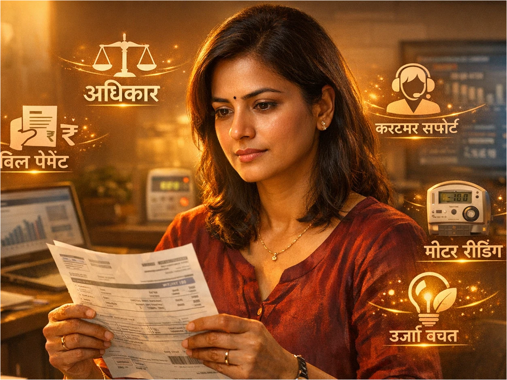

परिचय
वीज ही आपल्या दैनंदिन जीवनातील मूलभूत गरज बनली आहे. वीज पुरवठा आणि त्याची बिलिंग प्रक्रिया सुरळीत चालण्यासाठी ग्राहक व वीज कंपनी या दोघांमध्ये पारदर्शकता असणे आवश्यक आहे. बऱ्याचदा वीज ग्राहकांना त्यांच्या हक्कांबद्दल आणि कर्तव्यांबद्दल पुरेशी माहिती नसते, ज्यामुळे तांत्रिक किंवा आर्थिक वादांना सामोरे जावे लागते. विद्युत कायदा आणि ग्राहक संरक्षण नियमांनुसार प्रत्येक वीज ग्राहकाला कोणते विशेष कायदेशीर अधिकार मिळाले आहेत आणि त्यांनी कोणती कर्तव्ये पाळली पाहिजेत, याची सविस्तर माहिती या लेखात देण्यात आली आहे.
१. ग्राहक संरक्षण कायद्यानुसार वीज ग्राहकांचे अधिकार.
Key Takeaways
- ग्राहक संरक्षण कायदा आणि वीज ग्राहक हक्क नियम २०२० नुसार वीज ग्राहकांना दर्जेदार सेवा मिळण्याचा आणि गाऱ्हाणे मांडण्याचा पूर्ण अधिकार आहे.
वीज कंपन्या या व्यावसायिक सेवा पुरवठादार असल्याने ते थेट ग्राहक संरक्षण कायद्याच्या कक्षेत येतात. या अंतर्गत खालील मुख्य अधिकार मिळतात:
- सुरक्षित व अखंडित सेवा: ग्राहकाला २४ तास सुरक्षित आणि ठरवून दिलेल्या मानकांनुसार (Standards) वीज पुरवठा मिळण्याचा हक्क आहे.
- तक्रार निवारण मंच (CGRF): बिलात किंवा सेवेत त्रुटी आढळल्यास ग्राहक निवारण मंचाकडे दाद मागण्याचा आणि ग्राहक न्यायालयात जाण्याचा अधिकार कायद्याने दिला आहे.
तुम्हाला माहिती आहे का की चुकीच्या बिलाविरुद्ध तुम्ही ग्राहक मंचाकडे दाद मागू शकता?
२. वेळेत आणि अचूक वीज बिल मिळण्याचा ग्राहकाचा कायदेशीर हक्क.
Key Takeaways
- प्रत्येक बिलिंग सायकलमध्ये ग्राहकाला वेळेवर आणि अचूक मीटर वाचनावर आधारित बिल मिळणे हा त्याचा कायदेशीर हक्क आहे.
बिलिंग प्रक्रियेत पारदर्शकता राखण्यासाठी वीज वितरण कंपन्यांवर खालील नियम बंधनकारक आहेत:
- 1 नियमित बिलिंग: घरगुती ग्राहकांना दरमहा किंवा ठराविक कालावधीत बिल देणे आवश्यक आहे. सलग अनेक महिने एकत्रित किंवा सरासरी (Average) बिल देणे नियमाबाह्य आहे.
- 2 देय अवधी (Payment Window): बिलाची रक्कम भरण्यासाठी ग्राहकाला बिल मिळाल्यापासून कमीत कमी १५ दिवसांचा कालावधी मिळणे बंधनकारक आहे.
तुम्हाला दरमहा निश्चित तारखेला अचूक वीजबिल मिळते का?
३. मीटर वाचन स्वतः नोंदवण्याची सुविधा आणि अधिकार.
Key Takeaways
- घर बंद असल्यास किंवा मीटर वाचक न आल्यास ग्राहक स्वतःच्या मोबाईलवरून अधिकृत ॲपद्वारे मीटरचे फोटोसह वाचन पाठवू शकतात.
महावितरणने ग्राहकांच्या सुविधेसाठी 'Self Meter Reading' चा अधिकार दिला आहे, ज्याचे फायदे पुढीलप्रमाणे आहेत:
- अवाजवी बिलांपासून सुटका: अनेकदा मीटर रीडिंग एजन्सी उपलब्ध नसल्यास 'अंदाजे' किंवा चुकीचे युनिट्स लावले जातात. स्वतः वाचन नोंदवल्यास प्रत्यक्ष वापरानुसारच बिल येते.
- वेळेची लवचिकता: महावितरणकडून दरमहा ठराविक १-२ दिवसांची मुदत दिली जाते, त्या काळात मोबाईल ॲपद्वारे मीटरवरील अचूक आकडा (KWH) आणि फोटो सबमिट करता येतो.
तुम्ही दरमहा तुमच्या मीटरवरील आकडा आणि बिलावरील आकडा तपासून पाहता का?
४. महावितरणच्या कर्मचाऱ्यांकडून ओळखपत्राची मागणी करण्याचा हक्क.
Key Takeaways
- सुरक्षा आणि फसवणूक टाळण्यासाठी, मीटर तपासणी किंवा वीज कापण्यास आलेल्या कोणत्याही व्यक्तीकडे अधिकृत ओळखपत्राची (ID Card) मागणी करण्याचा ग्राहकाला पूर्ण हक्क आहे.
अनेकदा अनधिकृत व्यक्ती वीज अधिकारी असल्याचे भासवून ग्राहकांची फसवणूक करण्याचा प्रयत्न करतात, यापासून बचावासाठी खालील गोष्टी लक्षात ठेवाव्या:
- 1 ओळखपत्र तपासणे: घरात किंवा आवारात तपासणीसाठी प्रवेश देण्यापूर्वी संबंधित कर्मचाऱ्याचे महावितरणचे ओळखपत्र आणि 'तपासणी आदेश' (Inspection Order) मागण्याचा ग्राहकाला कायदेशीर अधिकार आहे.
- 2 कारवाईस नकार: जर समोरची व्यक्ती वैध ओळखपत्र दाखवू शकली नाही, तर ग्राहक तिला मीटरला हात लावण्यास मज्जाव करू शकतात आणि पोलिसात किंवा हेल्पलाईनवर तक्रार करू शकतात.
तुमच्याकडे आलेल्या वीज कर्मचाऱ्याकडे तुम्ही कधी आयडी कार्ड मागितले आहे का?
५. वीज बिलातील तपशील समजून घेण्याचा ग्राहकाचा अधिकार.
Key Takeaways
- बिलामध्ये आकारले जाणारे स्थिर आकार, इंधन समायोजन आकार आणि वीज शुल्क यांसारख्या प्रत्येक घटकाचे स्पष्टीकरण मिळण्याचा ग्राहकाला पूर्ण अधिकार आहे.
वीज बिल केवळ एकूण रक्कम भरण्यासाठी नसते, तर त्यामधील प्रत्येक पैशाचा हिशोब समजून घेणे हा ग्राहकाचा अधिकार आहे:
| बिलातील महत्त्वाचे घटक | याचा अर्थ काय होतो? | ग्राहकाचा हक्क |
|---|---|---|
| स्थिर आकार (Fixed Charges) | कनेक्शनच्या मंजूर भारानुसार (Load) लागणारे किमान शुल्क. | लोड चुकीचा असल्यास दुरुस्त करून घेणे. |
| इंधन समायोजन आकार (FAC) | वीज निर्मितीच्या खर्चातील चढ-उतारानुसार लागणारा आकार. | दरपत्रकाची पडताळणी करणे. |
| सुरक्षा ठेव (Security Deposit) | वार्षिक वीज वापराच्या आधारे ठेवली जाणारी अनामत रक्कम. | या ठेवीवर दरवर्षी व्याज मिळवण्याचा अधिकार. |
तुम्हाला तुमच्या वीज बिलावर दरवर्षी मिळणारे सुरक्षा ठेवीचे व्याज व्यवस्थित दिसते का?
६. स्टँडर्ड ऑफ परफॉर्मन्स नुसार सेवा विलंबासाठी दंड मागणीचा अधिकार.
Key Takeaways
- राज्य वीज नियामक आयोगाच्या 'Standard of Performance' (SOP) नियमांनुसार ठरलेल्या वेळेत सेवा न मिळाल्यास वीज कंपनीकडून भरपाई (Compensation) मिळवण्याचा अधिकार आहे.
जर वीज वितरण कंपनीने विहित कालमर्यादेत काम पूर्ण केले नाही, तर ग्राहकाला खालीलप्रमाणे दंडात्मक भरपाई मागता येते:
- नवीन कनेक्शन मिळण्यास विलंब: अर्ज आणि पूर्ण फी भरूनही ठराविक दिवसांत मीटर न मिळाल्यास प्रति आठवडा किंवा प्रति दिन निश्चित दराने भरपाई मिळते.
- दोषी मीटर बदलणे: मीटर निकामी झाल्याची तक्रार केल्यानंतर नियमांनुसार ठराविक अवधीत मीटर न बदलल्यास कंपनीला ग्राहकाला नुकसानभरपाई द्यावी लागते.
तुम्हाला माहिती आहे का की निष्काळजीपणामुळे होणाऱ्या विलंबासाठी वीज कंपनीला दंड होऊ शकतो?
७. वीज वापर प्रामाणिकपणे करण्याचे ग्राहकांचे कर्तव्य.
Key Takeaways
- अधिकार मिळवण्यासोबतच मीटरशी छेडछाड न करता आणि वीज चोरी न करता प्रामाणिकपणे वीज वापरणे हे प्रत्येक नागरिकाचे आद्य कर्तव्य आहे.
विद्युत कायद्याच्या चौकटीत राहून ग्राहकांनी खालील कर्तव्यांचे तंतोतंत पालन केले पाहिजे:
- 1 कायदेशीर जोडणी: वीज चोरी (Power Theft) करणे किंवा मीटर बायपास करून थेट आकडा टाकणे हा विद्युत कायदा २००३ च्या कलम १३५ नुसार गंभीर आणि अजामीनपात्र गुन्हा आहे.
- 2 मंजूर लोडचे पालन: घरासाठी जेवढा किलोवॅट (kW) लोड मंजूर केला आहे, त्यापेक्षा जास्त क्षमतेची उपकरणे वापरून सिस्टीमवर ओव्हरलोड देणे टाळावे, अन्यथा दंड होऊ शकतो.
आपल्या परिसरातील वीज चोरी रोखणे हे देखील एक सुजाण नागरिक म्हणून आपले कर्तव्य आहे, असे तुम्हाला वाटते का?
८. वीज बिल वेळेत भरण्याची ग्राहकांची जबाबदारी.
Key Takeaways
- बिलाची रक्कम वेळेत भरणे ही केवळ नैतिक जबाबदारी नसून, अखंडित वीज सेवेसाठी आवश्यक असलेली कायदेशीर अट आहे.
वेळेवर बिलाचा भरणा केल्याने ग्राहकाचा स्वतःचा आर्थिक फायदा होतो आणि सिस्टीम सुरळीत चालते:
- त्वरित भरणा सवलत (Prompt Payment Discount): अंतिम मुदतीपूर्वी बिल भरल्यास महावितरणकडून बिलाच्या रक्कमेवर सवलत (Discount) दिली जाते.
- कारवाईपासून संरक्षण: वेळेत बिल भरल्यामुळे विलंब शुल्क (DPC), व्याज आणि वीज पुरवठा खंडित होण्याची कटू कारवाई टाळता येते.
तुम्ही दरमहा 'Prompt Payment' सवलतीचा लाभ घेण्यासाठी मुदती आधीच बिल भरता का?
९. ग्राहकांनी लक्षात ठेवावयाच्या महत्त्वाच्या सूचना.
Key Takeaways
- डिजिटल सतर्कता आणि मीटर सुरक्षित ठेवणे या गोष्टी भविष्यातील सर्व प्रकारच्या वादांपासून ग्राहकाचे रक्षण करतात.
कोणतीही तांत्रिक किंवा कायदेशीर अडचण टाळण्यासाठी वीज ग्राहकांसाठी या अत्यंत महत्त्वाच्या सूचना आहेत:
- मोबाईल क्रमांक लिंक करणे: तुमच्या ग्राहक क्रमांकाशी (Consumer No.) स्वतःचा मोबाईल नंबर आणि ईमेल आयडी नोंदवून घ्या, जेणेकरून बिलिंग आणि वीज खंडित होण्याचे मेसेज त्वरित मिळतील.
- मीटरची सुरक्षा: मीटर बॉक्स सुरक्षित ठेवणे, तो पावसात ओला होणार नाही किंवा त्याला कोणतीही इजा होणार नाही याची काळजी घेणे ही ग्राहकाची वैयक्तिक जबाबदारी आहे.
तुमचा चालू मोबाईल नंबर महावितरणच्या ग्राहक क्रमांकाशी लिंक केलेला आहे का?
महत्त्वाचे निष्कर्ष
वीज ग्राहकांना केवळ वीज वापरण्याचा अधिकार नाही, तर ठरलेल्या मानकांनुसार दर्जेदार सेवा न मिळाल्यास कंपनीकडून भरपाई मागण्याचाही कायदेशीर अधिकार आहे.
स्वतः मीटर वाचन नोंदवणे आणि ओळखपत्राची मागणी करणे यांसारख्या अधिकारांचा वापर करून ग्राहक स्वतःची फसवणूक रोखू शकतात.
हक्क आणि कर्तव्ये या एकाच नाण्याच्या दोन बाजू आहेत; प्रामाणिकपणे वीज वापरणे आणि वेळेत बिल भरणे ही ग्राहकांची सर्वात मोठी जबाबदारी आहे.
पुढचं पाऊल:
आजच महावितरणचे अधिकृत मोबाईल ॲप डाऊनलोड करा किंवा त्यांच्या 'WSS' पोर्टलला भेट देऊन तुमचा मोबाईल नंबर अपडेट करा. तुमच्या वीज बिलाची रचना सविस्तर समजून घ्या आणि कोणत्याही अन्यायाविरुद्ध किंवा चुकीच्या बिलाविरुद्ध अधिकृत ग्राहक गाऱ्हाणे निवारण मंचाकडे (CGRF) लेखी तक्रार नोंदवण्यास कचहरू नका.
People Also Ask
अशा वेळी तुम्हाला बिलाला आव्हान देण्याचा पूर्ण अधिकार आहे. तुम्ही संबंधित उपविभागीय कार्यालयात 'Bill Dispute' अर्ज देऊ शकता. जोपर्यंत तक्रारीचे निवारण होत नाही, तोपर्यंत अंदाजे विवादित रक्कम न भरता मागील ६ महिन्यांच्या सरासरीनुसार बिल भरून तुम्ही कनेक्शन चालू ठेवू शकता.
तुम्हाला ठरवून दिलेले शुल्क भरून 'Meter Testing' ची मागणी करण्याचा अधिकार आहे. वीज कंपनी तुमच्या मीटरची लॅबमध्ये चाचणी करेल. मीटर सदोष आढळल्यास मागील काळातील अतिरिक्त घेतलेली रक्कम बिलात समायोजित केली जाते.
कायद्यानुसार १५ दिवसांची लिखित नोटीस न देता वीज तोडणे बेकायदेशीर आहे. अशी कारवाई झाल्यास तुम्ही थेट अंतर्गत गाऱ्हाणे निवारण कक्ष (ICR) किंवा वीज ग्राहक गाऱ्हाणे निवारण मंचाकडे (CGRF) तात्काळ वीजपुरवठा सुरू करण्यासाठी आणि भरपाई मिळवण्यासाठी अर्ज करू शकता.